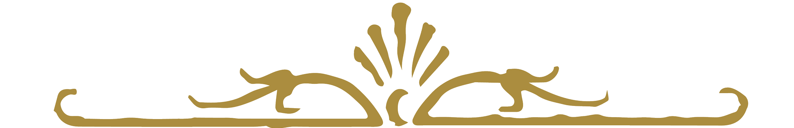

<div #headDiv class="headDiv">
  <!-- <div class="middenPaneel"> -->
<!-- 
  <div class="hoofding">
    
    
    

  </div>
</div>
</div> -->

<!-- <div class="lijn"></div> -->
<div class="middenPaneel">
  <h4>Michèle & Matthias</h4>

  <nav class="navbar fixed-bottom navbar-light bg-light" id="homeNav" style="-webkit-text-fill-color: black; cursor: pointer;">
    <div class="collapsible-body">
      <ul>
        <span>Ga naar: </span>
        <a class="navbar-brand" (click)="moveToTop()"><a>Top</a></a>
        <a class="navbar-brand" (click)="moveToKerkHuwelijk()"><a>Kerkelijk huwelijk</a></a>
        <!-- <a class="navbar-brand" (click)="moveToReceptie()"><a>Receptie</a></a> -->
        <a class="navbar-brand" (click)="moveToAvondfeest()"><a>Avondfeest</a></a>
        <a class="navbar-brand" (click)="moveToDresscode()"><a>Dresscode</a></a>
        <a class="navbar-brand" (click)="moveToRSVP()"><a>RSVP</a></a>
      </ul>
    </div>
  </nav>

  <div #intro id="Welkom" class="intro">
      <div class="bannerTop"></div>

    <h1>Welkom</h1>
    
    <div class="opsomming">

        <li>5 November 2006 - Het begin</li>
        <li>4 November 2017 - Het aanzoek</li>
        <li>9 Februari 2019 - Het huwelijk</li>


    </div>

    <p> Wij zijn verheugd jullie uit te nodigen om ons huwelijk mee te vieren op zaterdag 9 februari 2019 te
      Antwerpen.</p>
    <p>We beginnen de dag met de inzegening van het huwelijk in de Kathedraal van Antwerpen voor het Onze-Lieve-Vrouw altaar om 11.00 uur.</p>

    <p>Een eucharistie is pas een viering wanneer jullie erbij zijn! Om jullie deze dag te helpen plannen, zijn we zo vrij om enkele suggesties te doen qua vervoer. Hou er ook rekening mee dat het al eens frisjes kan zijn in februari. Verder vinden jullie hier onze huwelijkslijst en verdere details over de geplande activiteiten op deze speciale dag.</p>
    <p>
        Graag hadden we een bevestiging van jullie aanwezigheid op onze grote dag, liefst voor 12 januari 2019 via michelevanspilbeeck@gmail.com.
       </p>
    <p>Wij kijken er alvast naar uit!</p>

    <div class="bannerBot"></div>

    <div class="banner"></div>
  <div class="bannerTop"></div>

    <div #kerkHuwelijk class="kerkelijkHuwelijk">
      <h1>Kerkelijk huwelijk</h1>
      <div class="infoKerkelijkHuwelijk">
        <!-- Trouw voor de kerk zal plaatsvinden te Antwerpen in de Onze-Lieve-Vrouwekathedraal -->
        <div class="tekstKerk">
          <p>Om 11.00 uur zijn jullie welkom voor de inzegening van ons huwelijk in de Onze-Lieve-Vrouw Kathedraal van Antwerpen aan de Groenplaats 21, 2000 Antwerpen.</p>
          <p>Opgelet: ongeacht het hoge bezoek dat die dag verwacht wordt, opent de Kathedraal om 10 uur voor de toeristen. Jullie moeten uiteraard niet samen in de rij aanschuiven en mogen binnen zonder te betalen. </p>
      <div class="bannerTop"></div>

          <h2>Vervoer</h2>
          <p>Jullie kunnen op volgende plaatsen parkeren:
            <ul style="margin-left:20px;">
              <li>Parking Brabo, Kammenstraat 2, 2000 Antwerpen (betalend, 230m wandelafstand)</li>
              <li>Parking Groenplaats (Indigo Park), Groenplaats 46, 2000 Antwerpen (betalend, 260m
                wandelafstand)</li>
              <li>Parking Grote Markt, E. Van Dijckkaai 3, 2000 Antwerpen (betalend, 300m wandelafstand)</li>
              <li>APCOA Parking Scheldekaaien Zuid, Scheldekaaien Zuid, Ernest Van Dijckkaai, Hangar 20-21,
                2000 Antwerpen (betalend, 500m wandelafstand)</li>
              <li>Gratis parking Scheldekaaien, Sint-Michielskaai 13-15, 2000 Antwerpen (gratis, 1,1km
                wandelafstand)</li>
              <li>Gratis parking, Waalsekaai 12, 2000 Antwerpen (gratis, 1,5km wandelafstand)</li>
            </ul>
            <br>
            <p>Door de werken aan het nieuwe Operaplein en de Italiëlei is er momenteel geen doorgaand verkeer mogelijk over de Leien ter hoogte van de Rooseveltplaats. Dit noemt men "de knip". Je kan de Leien dus nog WEL gebruiken, maar niet meer om de Rooseveltplaats over te steken. Bovenstaande parkings blijven dus even gemakkelijk bereikbaar.</p>
            <p>Meer info over de bereikbaarheid van Antwerpen: www.slimnaarantwerpen.be</p>
        </div>
        <div class="kerkBol">
          11u<br>
          Kathedraal<br>
          Antwerpen<br>
        </div>
      </div>
      <div class="locatieKerkelijkHuwelijk">
        <div class="map">
          <agm-map [latitude]="latKerk" [longitude]="lngKerk" [zoom]=17>
            <agm-marker [latitude]="latKerk" [longitude]="lngKerk"></agm-marker>
          </agm-map>
        </div>
      </div>
    </div>

  <div class="bannerBot"></div>
    <div class="banner"></div>
  <div class="bannerTop"></div>

    <div #avondfeest class="avondfeest">
      <h1>Avondfeest</h1>
      <div class="infoAvondFeest">
        <!-- Avondfeest zal plaatsvinden om 20u te wilrijk. -->
        <div class=tekstAvondfeest>
          <p>’s Avonds feesten we in de zaal Theadrôme, Heistraat 56, 2610 Wilrijk.</p>

          <p>Jullie kunnen op volgende plaatsen parkeren, allemaal op wandelafstand van de Theadrôme (inrit parking aangegeven door een pijltje op de kaart):</p>

          <ul style="margin-left:30%;">
            <li>P1 = Gaston Fabrélaan (+-50 auto's)</li>
            <li>P2 = Jules Moretuslei (+-80 auto’s)</li>
            <li>P3 = Mastplein (+-200 auto’s)</li>
            <li>P4 = De Bist (+- 500 auto’s)</li>
          </ul>
          <p>De Theadrôme ligt tussen de A12 en E19 en is bereikbaar telkens op een kilometer van een afrit van
            de snelweg, langs de Gaston Fabrélaan (R11).</p>
          <p>Gelieve jullie aanwezigheid te bevestigen voor 12 januari 2019 via michelevanspilbeeck@gmail.com.</p>
        </div>
        <div class="avondfeestBol">
          20u<br>
          Theadrôme<br>
          Heistraat 56<br>
          2610 Wilrijk<br>
        </div>
      </div>
      <div class="locatieAvondfeest">
        <div class="map">
          <agm-map [latitude]="latAvondfeest" [longitude]="lngAvondfeest" [zoom]=17>
            <agm-marker [latitude]="latAvondfeest" [longitude]="lngAvondfeest"></agm-marker>
          </agm-map>
        </div>
      </div>
    </div>
  <div class="bannerBot"></div>

    <div class="banner"></div>
  <div class="bannerTop"></div>

    <div #dresscode class="dresscode">
      <h1>Dresscode</h1>
      <div class="tekstDresscode">
        <p>Onze geloofsovertuiging laat kleren van elk allure toe. Voor zij die meer nodig hebben dan het concept van een trouwfeest dat niet plaatsvindt in een bos kunnen wij enkele suggesties doen voor de kleding die je, uiteraard volledig optioneel, kan aandoen. 
            De kernwoorden zijn “formeel” en “feestelijk”. Woorden die sensu stricto als antoniemen kunnen beschouwd worden, een discussie die ook binnen het te voltrekken huwelijk woedt, maar we geven ze toch als leidraad. 
            </p>

        <p>Wat bedoelen we met ‘formeel’? Daarvoor hebben wij het volgende gedachte-experiment ontwikkeld: je staat tussen Tony, Ned en Rob Stark te wachten op James Bond om een feestmaal in Hogwarts bij te wonen. Voel je je underdressed, dan ben je underdressed. Krijg je een opmerking van McGonagall over de frivoliteit van je vestimentaire organisatie, dan ben je overdressed. </p>

        <p>Wat bedoelen we met ‘feestelijk’? Zonder cliché te willen zijn, citeren we Miranda Priestly: “Dress for the body you have, not the body you want.” Correcte kledij verstomt de omstanders en geeft je de vrijheid om dansmoves te doen die de artrose in je knieën eigenlijk niet meer toelaten. </p>
      </div>
    </div>

  <div class="bannerBot"></div>
    <div class="banner"></div>
  <div class="bannerTop"></div>

    <div #RSVP id="RSVP" class="RSVP">
      <h1>RSVP</h1>
      <div class="tekstRSVP">
        <p>Voor een correct beeld van het aantal hectoliters dat Michèle voor ons feest moet inplannen, vragen wij jullie een subtiel signaal: rookpluimen, handbezorgde berichten door een chimpansee met een broek en pet aan (enig professionalisme wordt verwacht), tekst geschreven door een vliegtuig in de lucht of zelfs een e-mail aan michelevanspilbeeck@gmail.com. Graag horen we van jullie voor 12 januari 2019, gezien dan het brouwproces ten laatste dient te starten. </p>
        <p>Speciale voedingsvereisten (allergieën) vernemen we ook graag via deze weg. Voor vegetariërs volstaat een eenvoudige verontschuldiging.</p>
      </div>
      <!-- <form>
        <div class="form-group">
          <label for="exampleInputEmail1">Email address</label>
          <input type="email" class="form-control" id="rsvpEmail" aria-describedby="emailHelp" placeholder="Enter email">
        </div>
        <div class="form-group">
          <label for="exampleInputPassword1">Gelieve uw namen hier door te geven.</label>
          <input type="text" class="form-control" id="rsvpNaam" placeholder="">
        </div>
        <div class="form-check">
          <input type="checkbox" class="form-check-input" id="rsvpAlleen">
          <label class="form-check-label" for="rsvpAlleen">Ik kom.</label>
        </div>
        <div class="form-check">
          <input type="checkbox" class="form-check-input" id="rsvpPlusOne">
          <label class="form-check-label" for="rsvpPlusOne">Ik kom met partner.</label>
        </div>
        <div class="form-check">
          <input type="checkbox" class="form-check-input" id="rsvpAlleen">
          <label class="form-check-label" for="exampleCheck1">Ik kom niet.</label>
        </div>
        <button type="submit" class="btn btn-primary">RSVP ME</button>
      </form> -->
    </div>
  <div class="bannerBot"></div>

    <!-- <div class="banner"></div> -->

  </div>


  <!-- ======================PLACEHOLDER====================== -->
<!-- 
  <p>Na alle drukte van ons huwelijk willen wij met z’n tweeën gaan ontspannen in de bergen en steden van het prachtige Japan. Michèle wil in een kimono rondlopen, Matthias wil met katana’s en wakizashi’s rondzwaaien en beiden willen graag Pokémon vangen in hun natuurlijke habitat. Wie wenst, kan op deze pagina - volledig vrijblijvend uiteraard - een bijdrage schenken voor onze huwelijksreis. </p>

  <p>Omdat een kluis in Gringott’s voor ons niet toegankelijk is en een draak leasen op korte termijn even duur blijkt als een parkeerboete in Gent, is de betalingsmethode van onze keuze een rekening bij Argenta geworden. Laat ons zeggen dat het bijna even veilig en mogelijk toegankelijker is. </p>
  <p>Weyns-Van Spilbeeck
      BE23 9731 5176 2291
      </p> -->